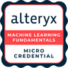

About
Senior Engineering Manager & Leader
As a senior engineer with extensive experience in developing distributed and cloud-based solutions, I have a proven track record of leading teams towards success, using my expertise to set the vision, coach and motivate team members. I deliver high-quality solutions on time while balancing the 4Ps - Priorities, People, Product, and Process. With a strategic mindset, I am continuously focused on identifying, isolating, and prioritizing, fixing complex issues.

- Email: mameen@demiry.com
- Phone: +1-425-516-9754
- City: Bothell, WA, USA
- Degree: Bachelor in Systems and Bio-Medical Engineering
- S/W Engineering: 15+ Years
- Management: 6+ Years
- Scrum leadership : 6+ Years
- R & D: 2+ Years
AREAS OF EXPERTISE
- Management, People, Budget
- Software Development
- Scrum, Agile Methodology
- Platform Development
- Process Improvement
- Hands-on Python, C++, Node, React
- SDLC
- Cloud Platforms: AWS, Azure
- Data and Visual Analytics
- Test Automation Framework
- Prompt Engineering
- ML / Failure Auto Analysis
- ML / Gen AI, LLM, RAG
SKILLS
CERTIFICATES
AWS; Certified Cloud Practitioner, 9/2022
AZ-900; Azure Fundamentals, 7/2022
SC-900; Microsoft, Security, Compliance, and Identity Fundamentals, 8/2022
Microsoft Gold Star Award, 2008
PMP Certified (289781), 9/2005 (Exp.)

DP-900; Azure Data Fundamentals, 1/2023
AI-900; Azure AI Fundamental, 1/2023

Alteryx, Foundations

Alteryx, Machine Learning Foundation
Resume
download the resume from here
Bothell, WA 98012 - 425.516.9754
- mameen@demiry.com - linked.in/ademiry
Summary
Ameen Demiry (Mohamed Ibrahim)
As a senior engineer with extensive experience in developing distributed and cloud-based solutions, I have a proven track record of leading teams towards success, using my expertise to set the vision, coach and motivate team members. I deliver high-quality solutions on time while balancing the 4Ps - Priorities, People, Product, and Process. With a strategic mindset, I am continuously focused on identifying, isolating, and prioritizing, fixing complex issues.
- Senior Engineering manager
- Scrum Leader
- Lead Full Stack S/W Developer
Education
Bachelor of Science (B.Sc.), Systems and Bio-Medical Engineering
CAIRO UNIVERSITY, Cairo, Egypt
Other Professional Experience
Software Development Engineer II,
[ 03/2013 - 03/2015 ]
Microsoft, (Office for Apple Platform)
- Designed and delivered features for Windows and Office on Apple OSX and iOS, in a live, complex, and highly-scaled production environment).
- Led right-to-left (RTL) support in Office APEX, reimplementing Windows and Office code for Apple OSX and iOS.
- Designed and implemented Extensible Incident Detection Utility for SQL Azure.
- Wrote tests and product code used in Azure C++ SDK, ARM testing for Concurrency runtime, and Casablanca.
Software Development Engineer II,
[ 03/2007 - 03/2013 ]
Microsoft, DevDiv, MSVC Concurrency Runtime
- Created and ran testing procedures to evaluate and report software performance, reliability, integration, and usability. Built software testing programs to automate testing processes. Recommended product improvements.
- Wrote and tested HTTP API, including auto-analysis service for C++ Crashes as part of Restful HTTP C++ library used in Azure C++ SDK and ARM testing for Concurrency runtime, Visual Studio 2010, and C++ REST API.
- Stress tested the next generation of parallel technology; designed and implemented Incident Detection Utility.
- Microsoft Gold Star Award, 2008.
Additional Experience
- Software Development Engineer/Lead Software Development Engineer, Harf Information Technology (Egypt): Led team of 3 software engineers. Technical scope: Microsoft PocketPC (C++, embedded devices) and Middle tier of web portals, business logic, and search engine integration.
- C++ Programmer, ITSS - IBM Egypt (Egypt): Technical Scope: Firefox Mozilla M16, adding bidi support.
- IT Manager, Aluminum Atlas (Egypt): Managed a team of 4 in two separate cities to install and support IT infrastructure. Technical Scope: Office Automation with VBA.
- Instructor, Cairo University and additional institutions: Taught C++, Windows, Microsoft Office, 3DS MAX.
- Maintainer, github, gitlab, bitbucket, docker, CMake, Jenkins
Professional Experience
Senior Software Engineering Manager AI/ML
2023 - Present
Moderna
Seattle, WA
- Led a team of five, fostering trust and cohesion through clear rules and focused meetings.
- Built and introduced mChat, an LLM chatbot, recognized in an investor call. Implemented a robust RAG Evaluation framework for document Q & A enhancement.
- Spearheaded the development of a versatile Gen AI platform for cross-functional applications. Implemented a secure API interface using ECS, S3, ChromaDB, and Weaviate.
- Added multi-model and multi-modality support, integrating Open AI functions for seamless web browsing, RAG, and image creation capability support.
- Guided continuous adoption and refinement of Scrum practices, ensuring adaptability through regular reevaluation.
- Contributed to an AI-centric culture, fostering proficiency through an AI Academy and immersive learning experiences.
- Developed and deployed a flexible Gen AI platform in three variants, facilitating use across diverse applications.
- Pioneered the introduction of BM25 within the RAG Evaluation framework, significantly improving keyword search accuracy in our hybrid system.
Software Engineering Manager
2021 - 2023
Tableau, Visualization Pipeline, Viz-Interactivity
Seattle, WA
- Managing two distinct teams.
- Doubled Visualization Pipeline team (3 Principles, 1 Lead, and 3 Seniors).
- Cloud migration for Product Internationalization (3 Senior SWE, 1 lead, 1 Project manager, and 8 contractors).
- Built multi-year team roadmap, collaborating with product and leadership to align with business. Shipped Image role on time and without reduction in scope, coaching and reviewing design and code, priorities. Developed and shipped Visualization API SP2, Initiated Accessibility SP1.
- Annual review, and cash planning. Created template adopted across the organization.
- Mentoring and coaching ICs in and outside of the team at many levels principal level, scrum leaders, as well as PIP.
- Transformed the team to be self-organized with assigned leadership for operations, quality, and feature development.
- Implemented lean startup principles (build-measure-learn) to boost velocity and morale.
- Prioritizing customer bug fixes, reducing the bug ratio in my team from 1:15 to only 1:3.
- Using Metrics to deprecate rarely used tests with low fixed bug yield to save $100K.
- Using data analytics and metrics to evaluate priorities, quality, cost, and ROI with the PMs and take action on quality, performance, and feature development.
- Fixing 10s of bugs, including complex C++ crashes, and races. As well as Performance bugs in C++ and ReactJS / JS.
Lead Member Technical Staff
2015 - 2021
Tableau
Seattle, WA
- As Scrum Leader, managed scope and timeline of each project for the Browser Everywhere team. Wrote, tested, and/or delivered multiple widely-used features and tools.
- Shipped SP1 of Browser Everywhere, implemented a new hybrid unified UI for side pane across desktop (C++), and web (Script Sharp, and vanilla JS).
- Debugged JS performance and reliability issues in hybrid development across JS/C++ boundaries.
- Monitored, analyzed, and reported scalability of Tableau data engine (Hyper) by designing scalability scenarios, using TabJolt to analyze and investigate results, and finding and resolving issues discovered. Wrote micro-service to ingest logs into data warehouse.
- Worked across multiple teams to develop and ship new side pane. Wrote a new command pipeline and improved the performance of the existing command pipeline.
- Refactored Partition Model Producer in Visual Pipeline, enabling more features to be shipped a year later.
- Led key projects in design, development, and post-release support of Runtime Core and associated tools.
- Implemented and tested the Runtime framework across C++, JS, and ReactJS. Using Emscripten, C++, JS, and WASM.
- Tested and shipped Runtime Core, a Visual Transformation language and Virtual Machine for the desktop and web client.
- Developed and implemented the Memory Leak Detection Framework used by multiple teams at Tableau.
- Refactored Partition Model Producer, a key component of the Visual Pipeline.
Portfolio
Here are some projects I'm proud to have worked on:
Testimonials
Contact
Location:
Bothell, WA, 98012/p>
Email:
mameen@demiry.com
Call:
+1 425 516 9754